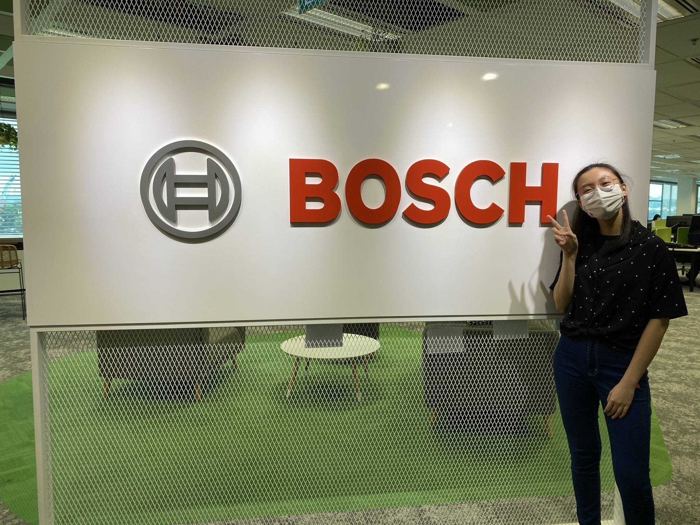

My Bosch Internship Experience
Details
- Category: Internship
- Company: https://www.bosch.com.sg/
- Internship Duration: Jun 2020 - Oct 2020
My internship at Bosch was my first look into the industry and I am always grateful for the fulfiling and eye-opening experience. I was very lucky to have met my supervisor, William, through this internship and I would like to thank him for this opportunity.
Spending 5 months at Bosch taught me a lot! I was involved in a shrimp size estimation project, where we used deep neural networks to identify and predict the weight of an individual shrimp.
I've learnt the basics of conducting data collection with proper documentation and data engineering using various techniques such as TFaugmentation and imgaug. Furthermore, I combined multiple preprocessing steps into one script which greatly increased our efficiency and reduced the tediousness of the data preprocessing step. This was crucial as the data preprocessing part was one of the most time consuming steps in our process and reducing this meant more time for development.
Addtionally, William and I collaborated to devise and evaluate the object detection and regression models used for the size estimation. This involved a lot of experimentation of different techniques to see which worked best with the model and also helped greatly developed my problem solving skills.
Lastly, I created a flask web application with the deep learning models in backend as a proof of concept for our client, showcasing the low latency of our models. The user only had to capture and upload an image of a shrimp to the web application and the predicted weight of the shrimp will be displayed on the page after a few seconds, providing convenience by easily predicting the shrimp size, compared the the traditional method of scooping the shrimp and weighing it on a scale.
These are some of the techniques and technology that I've experimented with during the internship:
- Developing OD classification and regression models using Tensorflow and Keras
- Preprocessing using TFaugmentation, imgaug, OpenCV and HSV segmentation
- Masking data using image annotation tool to produce binary images for Semantic Segmentation
- Experimented with Zhang Suen's thinning algorithm for skeletonization
- Creating and dockerising a flask web application
- Heroku for deployment of web application
- Gitbash and git-lfs
- Encoding images in base64